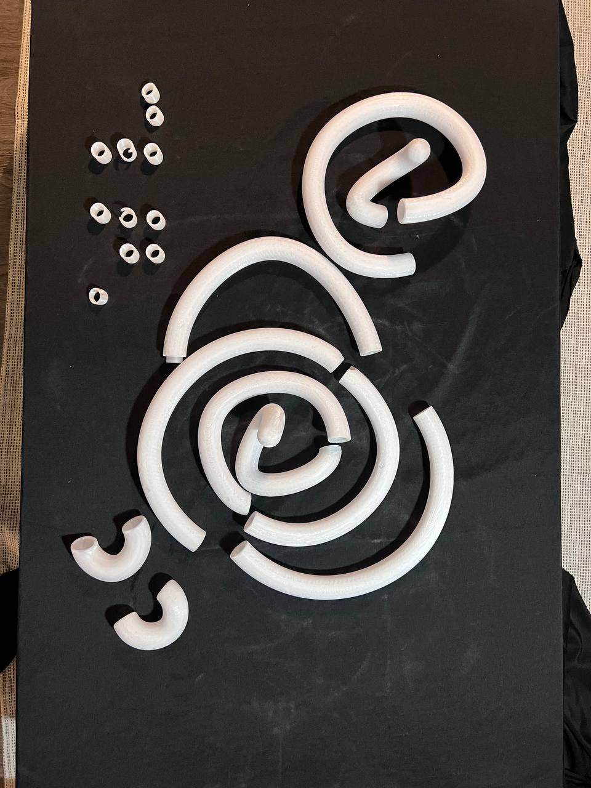
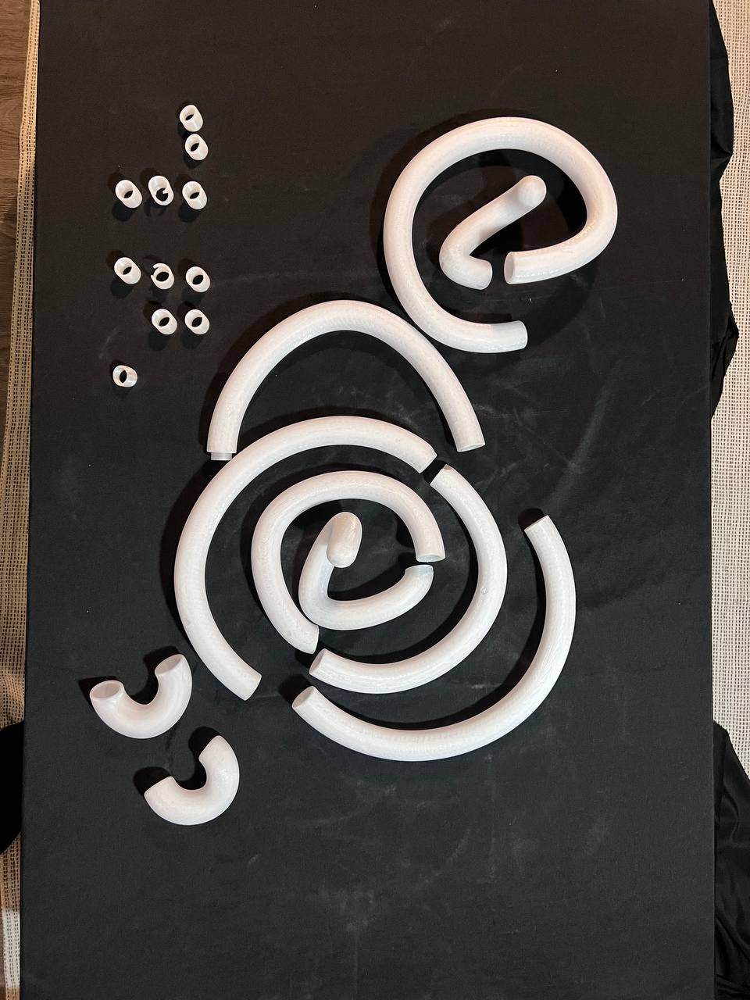

A06: Lamps!
For my 3D printed lamp, I am using a Raspberry Pi running HomeBridge to control an addressable LED strip. I am doing a modern take to the traditional haloguen lamps, using as main inspiration these graphic design reference:


-- LIGHT SOURCE --
I got an RGB 5050SMD addressable led strip with approximately 1 cm. of width.

-- FIRST TEST --
The biggest challenge in the creation of the lamp is ensuring a consistent diffusion of the light. Each LED is separated by a fixed distance, if the 3D printed enclosure is too close to the surface of the LEDs, or doesnt have the appropiate thickness to diffuse the light, it will be too noticeable and not to pleasant to look at.

I am using transparent PETG filament. I 3D printed this enclosure, however, I quickly learned that the infill structure was a bit too noticeable to the exterior. I am looking for a truly diffusive look and this did not give the results I wanted.

Furthermore, printing this shape for a few loops would take 5 to 6 days to print. Which leave a very narrow margin of error if something goes wrong.
-- SECOND TEST --
For the second test, I narrowed the thickness of the tube. I also did solid walls, with 6 layers. However, even when using that high amount of walls, it did not diffuse the light the right way.


 



.jpg)